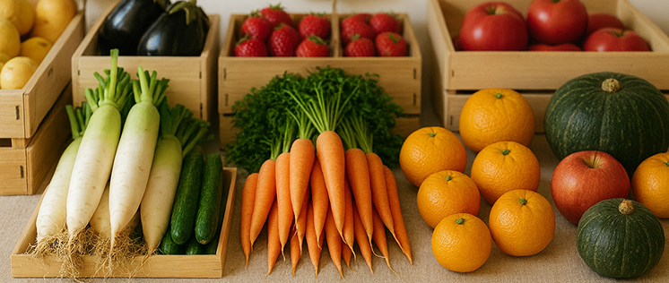
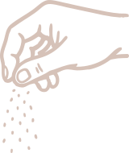
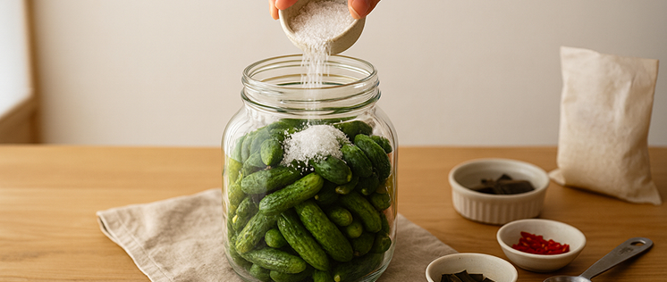
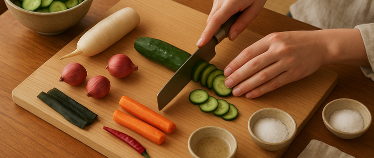
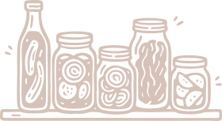
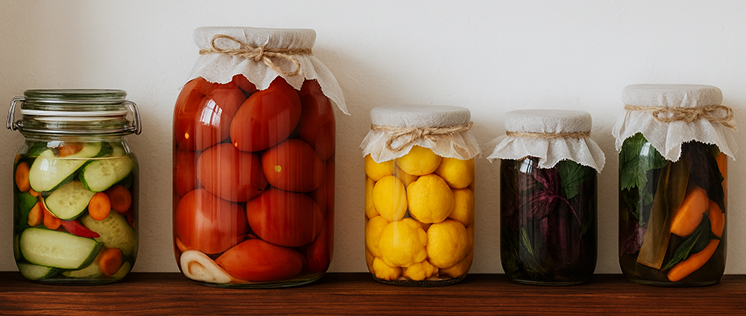
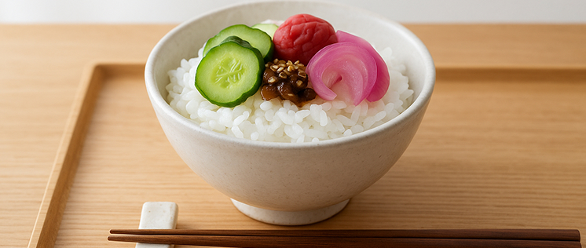

新味登場
我們花了點時間，
把新味道醃進來了

鹽麴醃香菇
香菇以自家發酵鹽麴細火熟成三日，鎖住原始的香氣與鮮味，質地飽滿，是一道溫和卻耐吃的常備菜
NTD$ 300

煙燻蒜香小黃瓜
新鮮小黃瓜經低溫煙燻後醃入蒜頭與香料，口感爽脆，煙香與蒜香交疊，是日常餐桌的經典搭配
NTD$ 250

醋醃紫洋蔥
使用天然果醋去醃漬紫洋蔥，去除辛辣、保留甜脆，清爽酸香，適合搭配沙拉、三明治或拌麵
NTD$ 200
我們怎麼醃出這一味？
01
選用在地小農
新鮮食材
每一口都吃得到
當季的踏實與鮮甜
不添加化學品



02
低油低鹽
天然發酵
不靠添加物延長保存
我們用時間做保存
03
純手工製作
細火慢熬
從切菜、殺菌、醃漬
每一步都有人親手照顧



04
密封玻璃罐裝
安心看得見
食材泡在裡面是什麼
一眼就知道
05
老味新作
配飯配麵都合
阿嬤傳下來的味道中改良
怎麼搭都對味

那些被點頭的瞬間
餐桌上的微笑，是我們最想收到的肯定